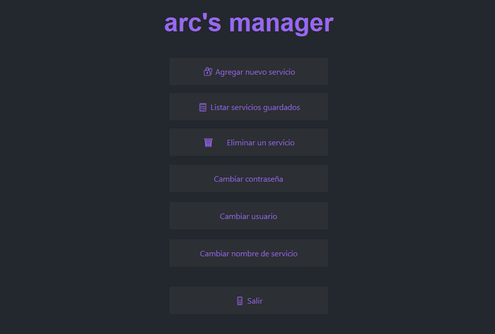

Hecho en Python, utilizando Tkinter para la interfaz gráfica y Fernet para la encriptación.
Open-source, sin servicios en la nube
Cómo funciona
Una vez instalado, el gestor permite almacenar, buscar y modificar tus contraseñas locales. Ideal para
desarrolladores y usuarios técnicos que buscan simplicidad sin sacrificar seguridad.
Usalo desde tu terminal, rápido y seguro
O utiliza la interfaz gráfica si prefieres algo más sencillo
Capturas de pantalla (Beta)

Preguntas
¿Este programa sube mis contraseñas a Internet?
No. Todo se guarda localmente y está cifrado. Nada se envía fuera de tu equipo.
¿Qué pasa si olvido mi clave maestra?
No se podrá acceder a tus datos. Por motivos de seguridad, no hay recuperación. Lo mismo pasa si pierdes
tu archivo de encriptación.